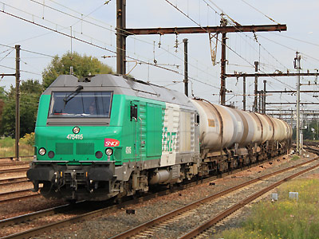

Ferrovia - 05 Juin 2012
BB 75400
Quelques données techniques
Constructeur : Alstom, Siemens, MTU
Chaîne de traction : Alternateur triphasé, moteurs de traction asynchrones
Motorisation : moteur Diesel MTU 4000 R 43L
Puissance 2400 kW
Pour plus d'info :
La fiche BB 75400 sur Wikipedia
L'inventaire des BB 75400 sur Trains du Sud-Ouest

La BB 75415 à Juvisy (16/09/2011)